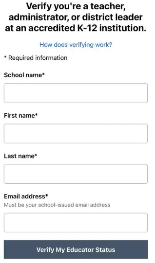

认证失败后的处理方法
How to Handle Certification Failure
重要提示：
由于 Gemini One Pro 和 ChatGPT Teacher K12 采用的是基于文档的验证方式，认证过程中可能出现失败，属于正常现象。
Important: Since Gemini One Pro and ChatGPT Teacher K12 use document-based
verification, failure during the certification process is normal.
常见错误及排查
Common Errors and Troubleshooting
错误示例 / Error Example
步骤 2 失败 (状态码 400): {'verificationId': '6927a491fc1f830b9018a9d8', 'currentStep':
'error', 'errorIds': ['invalidStep'], 'segment': 'student', 'subSegment': None, 'locale': 'en-US',
'country': None, 'created': 1764205713994, 'updated': 1764205751180, 'errorDetailId': None,
'systemErrorMessage': "Verification with id '6927a491fc1f830b9018a9d8' can not perform step
'COLLECT_STUDENT_PERSONAL_INFO'", 'redirectUrl': None}
说明与解决方案 / Explanation & Solution
-
原因 / Cause:
该错误提示意味着当前 SheerID 认证链接未处于可提交表单的页面，也就是链接状态异常，无法执行下一步提交操作。
This error means the current SheerID link is not in a submittable form state - link status is
abnormal.

SheerID K-12 Teacher Verification Form - This is what a valid form should look like
-
解决方案 / Solution:
请自行检查 SheerID 链接的状态，确保该链接打开后是提交学生个人信息的表单页面。若不是，请按"认证失败时的推荐操作步骤"中第 2、3、4
步操作，使链接失效并重新生成新链接后，再发送给机器人继续认证。
Check SheerID link status. If it doesn't show a personal info form, follow steps 2, 3, 4 above
to expire the link and generate a new one.